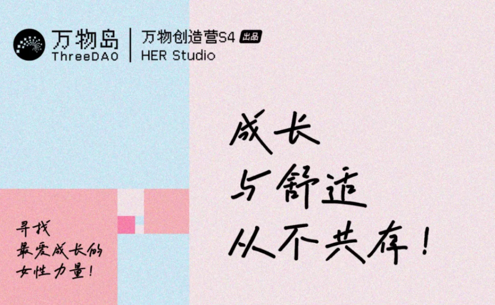
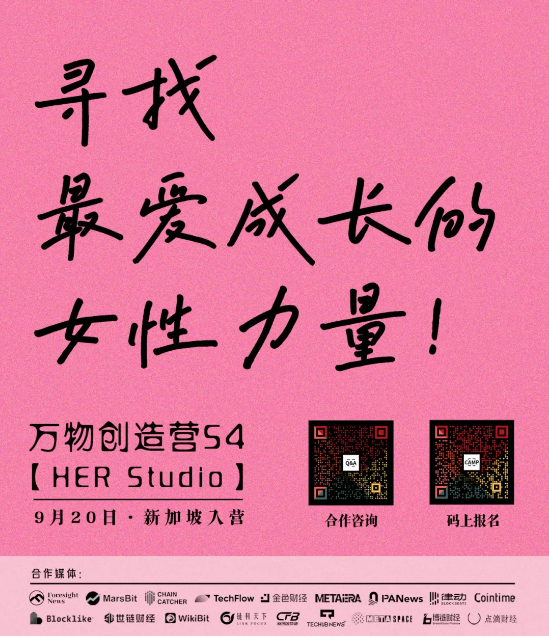

SeeGIRLS 友推｜成长与舒适从不共存，万物岛姐妹发起 “HER Studio”
作者: SeeGIRLS

让花成为花、树成为树，让你成为你。
SeeGIRLS：SeeDAO 2023年第三期新手营自涌现的女性小组。在三个月中组织、创作了12期「Web3她声音」的分享活动，收录在SeeDAO官方播客SeeTalk (小宇宙&苹果Podcast app)
Vol.02 女孩，你可以成为任何人，在了解风险的前提下；
Vol.07 唐晗：直面野心，我们可以站在舞台中心；
Vol.14 你适合创业吗？聊聊女性创始人；
Vol.15 女生无需活在别人影子里 等等

（一）听见她的心声
一眨眼，万物创造营入学CEO突破了200位，申请入营的候选人有上千名，但万物岛各班级女性CEO占比始终没超过7%。虽然参与面试的女性创造者被加倍珍惜，但入营的概率还是微乎其微。科技部数据显示全国科技工作者中女性占比达45.8%，但AI与数据领域岗位的女性候选人不到1%，同时职位越高女性越少，女性领军人才极度匮乏。开放自由的数字世界里，谁束缚了我们新一代的姐妹？也许她与众不同但身陷躺平的人群，或许她不安现状但缺个友好的学习机会。万物岛新一季“万物创造营”决定关注她、看见她，倾听她的声音。
在万物岛校友群，CEO同学之间经常互帮互助，其中问得最多的一句便是“有CMO推荐吗？”还会补上一句“女性优先！”大量数据和案例证明了女性是自然行走的Story teller，天生的创作者、分享者、增长官。当一个组织拥有极具创造力的女性领导者或合伙人犹如神助，往往轻盈地更上一层楼。这一季Creator Camp，没有固化的历史角色要求，没有听不懂的缩写词汇。让花成为花、树成为树，让你成为你，每个姐妹都可以从超级个体做起。
半年前在迪拜的一个傍晚，被万物岛上多位Web3女神的梦想打动，我们建了个小群聚焦于投资自己，群名叫“OnChain大女主”，她或是“HER Studio”的缘起和原型。这个群的超级个体有：《狮子座》的创作者曾轶可、《北京折叠》的创作者郝景芳、《我是创始人》的创作者曹美英木、前特朗普IP顾问OPENVERSE创始人徐文、Huobi首个天使投资人Doris、D11创始合伙人Lily、SmartDeer创始人Elaine、LingoAI CEO Una、CESS发起人Jessie、MetayAI 联创Joyin、Web3独立创作者洋子、《Wbe3.0众生相》创作者唐诗云、47号大巴创始人李舒、XAR合伙人Echo现在，我们正式发起“HER Studio”，公开寻找这样的姐妹：3、坚持把自我成长放在第一位，要留下作品。
这一次，远离那些陪衬的喧嚣，选择大女主的独立成长部落，释放你对生命的热烈追求，世界因你而不同！（扫描海报二维码或“阅读原文”马上报名｛万物创造营·HER Studio｝，名额有限，先报先录✨）